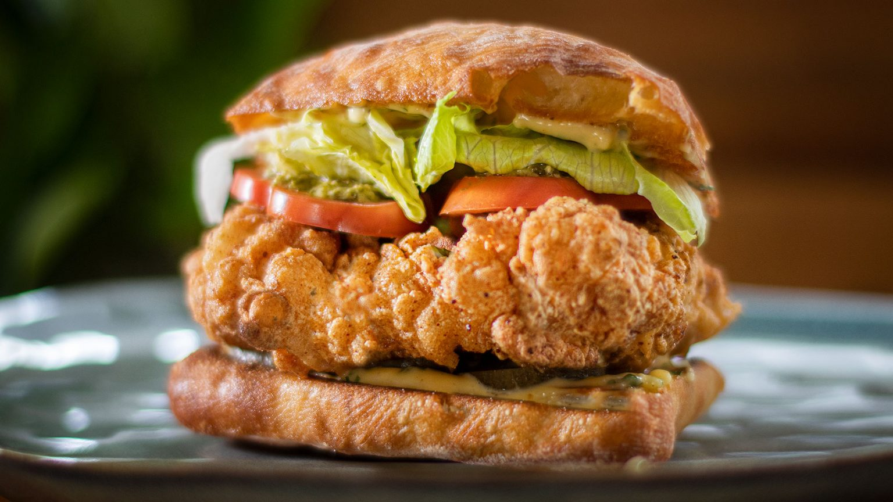

Fried chicken burger

Ingredienten
- Plantaardige olie, om te frituren
- 4 kippendijen of kippenborsten - Geen botten
- 2 tl uienpoeder
- 2 tl uienpoeder
- 1 el gerookte paprika
- ½ tl witte peper
- 1 tl zout
- 1 tl bruine suiker
- 1 el gedroogde oregano
- 1 kopje karnemelk
- 2 eiwitten (gebruik dooiers voor mayonaise als je ze zelf maakt)
- 1 laurierblad
- 1 kopje bloem voor alle doeleinden
- ¾ kopje maizena
Bereiding
- Voeg voor je kruidenmix in een mengkom uienpoeder, knoflookpoeder, witte peper, zout en bruine suiker toe. Goed mengen.
- Snijd eventueel vet van je stukjes kip. Strooi op je stukken kip een royale hoeveelheid gedroogde oregano aan elke kant. Dan ca. 2 theelepels van de kruidenmix en bedek elke kant gelijkmatig. Bewaar de rest van de kruidenmix voor later. Maak de dikke delen van je kip plat, klop ze lichtjes met een vleeshamer of de onderkant van een pan tot ze even groot zijn. Dit zal helpen om het gelijkmatig te koken.
- Voeg in een marinadekom of mengkom de karnemelk, het laurierblad, de halve theelepel zout en 1 laurierblad toe en meng goed. Leg de gekruide kip in de karnemelk, dek af, zet in de koelkast en marineer een nacht of minimaal 2 uur.
- Doe de mayonaise in een kleine mengkom (zie mijn recept), voeg een fijngehakt teentje knoflook, witte wijnazijn, gehakte peterselie toe en zet apart.
- Haal de kip de volgende dag of 2 uur later 30 minuten voor gebruik uit de koelkast. Verwarm uw frituurolie tot een temperatuur van 340 ° F - 170 ° C (zorg ervoor dat u deze niet te vol doet in geval van brand)
–
Terwijl de olie aan het opwarmen is, voeg je je overgebleven kruidenmix toe aan een mengkom samen met de bloem voor alle doeleinden, maïszetmeel (maïsmeel) en bakpoeder, goed mengen.
- Klop de twee eiwitten stijf zodat ze een beetje schuimen. Haal de stukjes kip uit de karnemelk en dompel ze eerst in het eiwit en wentel ze vervolgens een voor een door het pittige bloemmengsel. Herhaal het proces totdat elk stuk is bedekt met bloemmengsel.
- Leg de kip met 2 of 3 stukken tegelijk in de hete olie tot ze goudbruin zijn, ca. 3-4 minuten. Probeer een constante temperatuur van 340 ° F - 170 ° C te behouden. Eenmaal gaar, verwijder en plaats op een rooster zodat het vet kan druppelen. Serveer onmiddellijk.
- Zet voor het ciabattabrood een pan op hoog vuur met een beetje olijfolie, rooster de binnenkant van het brood in olie tot het bruin is.
Smeer het brood in met mayonaise, verdeel het gelijkmatig over alle stukken.
- Plaats voor de montage het onderste stuk op de serveerschaal en bedek met augurken. Voeg een gebraden kipstuk toe, twee plakjes tomaat gegarneerd met pesto. Wat knapperige ijsbergsla en de bovenkant van het brood. Geniet van mijn Italiaanse twisted fried chicken burgers, dat weet ik zeker!!!